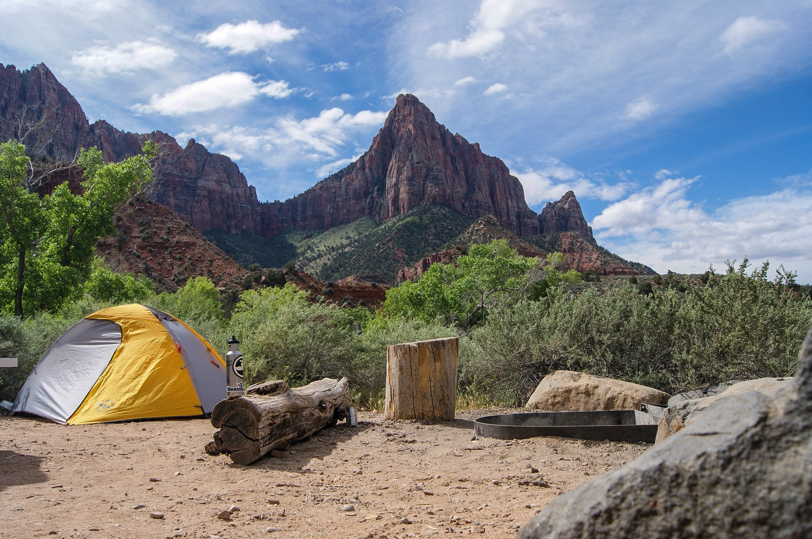

Kamp Tarihi
Bugünkü anlamda modern eğlence kampçılığının kurucusu Thomas Hiram Holding, 1908'de Kampçının El Kitabını yazdı. Kamp yapma dürtüsü çocukken edindiği deneyimlerden kaynaklanıyordu.
Öğrenmeye devam!
Holding, 1901 yılında dünyanın ilk kamp kulübü olan Bisiklet Kampçıları Derneği'ni kurdu. Ünlü Antarktika kâşifi Robert Falcon Scott, 1909’da Kamp Kulübü'nün ilk başkanı oldu.
Birinci Dünya Savaşı'ndan sonra, İzcilerin ve Kız Rehberlerin kurucusu Robert Baden-Powell, Camping Club'ın başkanı oldu. Bir dizi Batı Avrupa ülkesinde kamp organizasyonlarının kurulmasını teşvik eden Büyük Britanya ve İrlanda kampçılığın lider ülkelerinden oldu.
1932'de Uluslararası Kampçılık ve Karavancılık Federasyonu (Fédération Internationale de Camping ve de Caravanning; FICC) kuruldu - ilk uluslararası kamp organizasyonu gerçekleşmiş oldu.
Kuzey Amerika’da ise 1870'lerden önce eğlence için vahşi doğada bireyler kamp yapıyordu.
At sırtında, yürüyerek seyahat veya kano ile yapılıyordu bu kamplar. Ama organize bir kamp yoktu. Adirondack Mountain Club ise 1922'de kuruldu.
Appalachian Mountain Club (1876) ve Sierra Club (1892) gibi birçok kuruluş, uzun süredir kampçılara hizmet veriyordu.
Bununla birlikte, kampçıların geniş çapta örgütlenmesi, boş zamanın artması ve motorlu araçların kullanılması daha sonra gerçekleşti.
Kamp yapma aktivitelerinin muazzam bir büyümeye sahip olması II. Dünya Savaşı sonrasında mümkün oldu.
Kuzey Amerika'daki organize kampçıların çoğu yerel kulüplere aittir, ancak Amerika Birleşik Devletleri'nde iki büyük ölçekli ulusal organizasyon vardır (Ulusal Kampçılar ve Yürüyüşçüler Derneği ve Kuzey Amerika Aile Kampçıları Derneği) ve bir tanesi Kanada'da (Kanada Kampçılık ve Karavancılık Federasyonu).
Avustralya ve Yeni Zelanda'da bireysel kampçılık çok popülerdir, ancak organize tesisler Kuzey Amerika'dakilere kıyasla nispeten azdır. Afrika'da ve Asya'nın bazı bölgelerinde rekreasyon kamplarının popülaritesi artırmaya devam ediyor.